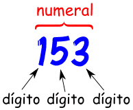

Numeros de Varios digitos
Un dígito o cifra es un símbolo individual que se usa para construir numerales.
0, 1, 2, 3, 4, 5, 6, 7, 8 y 9 son los diez dígitos que usamos en los números de siempre.

Con los dígitos hacemos numerales, y los numerales representan la idea de un número.

Eso igual que cuando las letras forman palabras, y las palabras representan la idea de una cosa
.gif)
Los números de varios dígitos son aquellos que tienen más de un dígito. En otras palabras, son números que están formados por más de una cifra. Por ejemplo:
El número 1234 es un polidígito porque tiene cuatro dígitos.
El número 56789 también es un polidígito porque tiene cinco dígitos.
En matemáticas, cuando trabajamos con números de varios dígitos, es importante entender el valor posicional de cada cifra. Esto significa que el lugar que ocupa cada dígito en el número afecta su valor. Por ejemplo, en el número 1234, el 1 está en la posición de las unidades de mil, el 2 está en la posición de las centenas, el 3 en las decenas y el 4 en las unidades.
Los números de varios dígitos nos permiten representar cantidades más grandes y realizar operaciones matemáticas más complejas. ¡Es como armar un rompecabezas numérico!